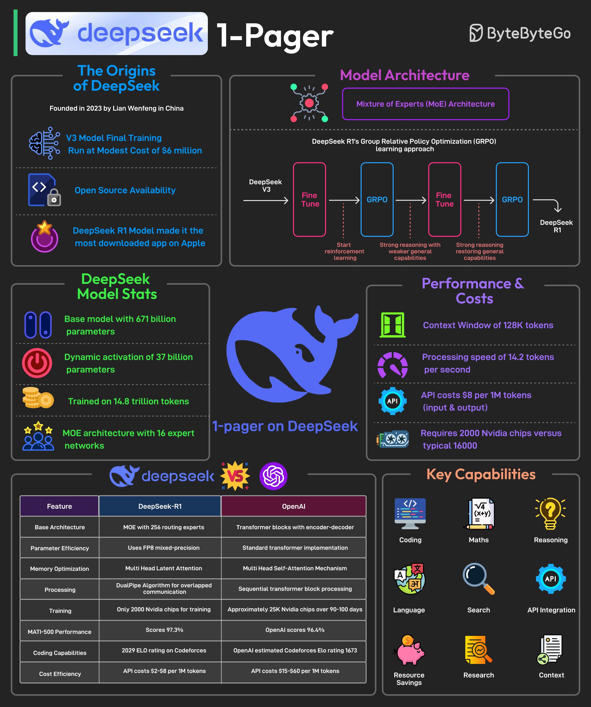

It is said to have developed a powerful AI model at a remarkably low cost, approximately $6 million for the final training run. In January 2025, it is said to have released its latest reasoning-focused model known as DeepSeek R1.
The release made it the No. 1 downloaded free app on the Apple Play Store.
Most AI models are trained using supervised fine-tuning, meaning they learn by mimicking large datasets of human-annotated examples. This method has limitations.
DeepSeek R1 overcomes these limitations by using Group Relative Policy Optimization (GRPO), a reinforcement learning technique that improves reasoning efficiency by comparing multiple possible answers within the same context.
Some facts about DeepSeek’s R1 model are as follows: